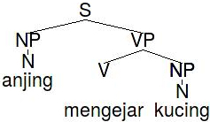
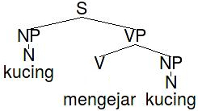
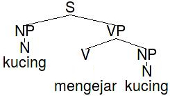

An Indonesian Resource Grammar (INDRA)
in the Framework of
Head-Driven Phrase Structure Grammar (HPSG)
and its Application to Machine Translation
PhD Confirmation Exercise
David Moeljadi
Linguistics and Multilingual Studies
Nanyang Technological University
25 May 2015

* Slides can be accessed at davidmoeljadi.github.io/QE
Outline
- INDRA
- Indonesian language
- Theoretical framework
- Grammar engineering and tools
- Preliminary work:
- Lexical acquisition
- Morphophonology
- Machine translation
- Research plan
INDRA
INDonesian Resource GrAmmar
Why we need INDRA?
- No broad-coverage, open-source computational grammar for Indonesian
- No robust Indonesian grammar modelled in Head-Driven Phrase Structure Grammar (HPSG) and Minimal Recursion Semantics (MRS) framework
- No robust rule-based machine translation for Indonesian
INDRA
- the first broad-coverage, open-source computational grammar for Indonesian, modelled in Head-Driven Phrase Structure Grammar (HPSG) and Minimal Recursion Semantics (MRS)
- created and developed using tools from DELPH-IN
- aims to parse and treebank Indonesian text in NTU-MC
- will be applied to machine translation
Actual application
INDRA parses Indonesian text and gives possible interpretations.
Let's parse and translate this ambiguous Indonesian sentence!
- Anjingnya sedang menggonggong.
anjing=nya sedang menggonggong
dog=DEF PROG bark
dog=3SG PROG bark
"The/his/her dog(s) is/are/was/were barking."
(based on MRS test-suite no.65)
Indonesian language
- Classification
- Language resources
- Morphology and syntactic typology
- Indonesian sentences
Classification
- Austronesian
- Malayo-Polynesian
- Western Malayo-Polynesian
- Malayo-Chamic
- Malayic
- Malay
- Indonesian (Indonesia)
- Standard Malay (Malaysia)
- Brunei Malay (Brunei)
- Local Malay (Singapore)
- Makassar Malay (Indonesia)
- ...
Indonesian
|
Alternate names |
bahasa Indonesia |
|
Population in Indonesia |
L1 speakers: 43 million (2010 census) |
|
Language status |
National language |
|
Dialects |
Lexical similarity: over 80% with Standard Malay |
|
Writing |
Latin script |
Language resources


Morphology and syntactic typology
|
Morphological classification |
mildly agglutinative |
|
Gender system |
no gender |
|
Word order |
SVO |
|
Position of negative word |
S-Neg-V-O |
|
Order of Adj and Noun |
N-Adj |
|
Order of Dem and Noun |
N-Dem |
|
Expression of pronominal subject |
obligatory PRO in subject position |
Indonesian sentences
- Anjing menggonggong.
dog bark
"Dogs bark." (own data)
- Anjing mengejar kucing.
anjing meN-kejar kucing
dog ACT-chase cat
"Dogs chase cats." (own data)
- Kucing dikejar anjing.
kucing di-kejar anjing
cat PASS-chase dog
"Cats are chased by dogs." (own data)
Theoretical framework
- Phrase structure grammar
- Head-driven Phrase Structure Grammar (HPSG)
- Minimal Recursion Semantics (MRS)
Phrase Structure Grammar
|
|
What sentences can be generated
from the rules and lexicon above?
- Anjing mengejar kucing "Dogs chase cats"
- Kucing mengejar anjing "Cats chase dogs"
- Anjing mengejar anjing "Dogs chase dogs"
- Kucing mengejar kucing "Cats chase cats"
Phrase Structure Grammar


 

Head-driven Phrase Structure Grammar (HPSG)
- Three main (optional) classifiers
buah ekor orang buku "book"
fakta "fact"anjing "dog"
kucing "cat"ibu "mother"
ayah "father" -
- * dua "two" buah (anjing/ayah)
- * dua ekor (buku/ibu)
- * dua orang (fakta/kucing)
(Sneddon et al., 2010; Alwi et al., 2014)
Head-driven Phrase Structure Grammar (HPSG)
- Type hierarchy

Type hierarchy of noun
Head-driven Phrase Structure Grammar (HPSG)
- Feature structures

Feature structures of anjing "dog"
(Sag et al., 2003; Jurafsky & Martin, 2009)
Minimal Recursion Semantics (MRS)
- lists the correct predicates and the relationships between them
MRS of anjing mengejar kucing "dogs chase cats"
(Copestake et al., 2005)
Minimal Recursion Semantics (MRS)
- lists the correct predicates and the relationships between them

MRS of anjing mengejar kucing "dogs chase cats"
(Copestake et al., 2005)
Minimal Recursion Semantics (MRS)
- lists the correct predicates and the relationships between them

MRS of anjing mengejar kucing "dogs chase cats"
(Copestake et al., 2005)
Minimal Recursion Semantics (MRS)
- lists the correct predicates and the relationships between them

MRS of anjing mengejar kucing "dogs chase cats"
(Copestake et al., 2005)
Grammar engineering and tools
- Why grammar engineering?
- Research collaboration: DELPH-IN
- Type Description Language (TDL)
- Treebanker: Full Forest TreeBanking (FFTB)
- MRS Test-suite
- Grammar development workflow
Grammar engineering
- focused on syntax and semantics
- aims to parse and generate text
- uses computer to check the model for consistency
and to test against a much broader range of examples - combines linguistic analysis and computational implementation
- considers every detail of language phenomena which might not come to our mind when we document a language on paper
(Bender & Fokkens, 2010)
DEep Linguistic Processing with HPSG - INitiative (DELPH-IN)
Type Description Language (TDL)
anjing := nonhuman-noun-noun-lex &
[ STEM < "anjing" >,
SYNSEM.LKEYS.KEYREL.PRED "_anjing_n_rel" ].
kejar := tr-verb-lex &
[ STEM < "kejar" >,
SYNSEM.LKEYS.KEYREL.PRED "_kejar_v_rel" ].
kucing := nonhuman-noun-noun-lex &
[ STEM < "kucing" >,
SYNSEM.LKEYS.KEYREL.PRED "_kucing_n_rel" ].
TDL of anjing "dog", kejar "chase" and kucing "cat"
(Copestake et al., 2000)
MRS Test-suite
- Test-suite: a sample of text illustrating a particular language phenomenon or construction
- MRS Test-suite: a representative set of sentences designed to show some of the semantic phenomena
- The original set of 107 sentences are in English, translated into many languages including Indonesian
- Example:
Phenomenon English Indonesian intransitive Abrams barked Adi menggonggong transitive Abrams chased Browne Adi mengejar Budi ... ... ...
Full Forest Treebanker (FFTB)
- Makes a syntactically annotated corpus by selecting the correct parse tree from the alternatives or interpretations produced by the grammar


Treebanking of Indonesian text with FFTB
(Packard, 2014; Jurafsky & Martin, 2009)
Grammar development workflow

(Bender et al., 2011)
Preliminary work
- Lexical (verb) acquisition
- Morphophonology
(1) Lexical (verb) acquisition
- Assumptions
- Verbs in ERG
- Lexical source: Wordnet
- Workflow
- Results
- Future work
Assumptions
- Inputting words manually into the grammar is labor intensive and time consuming
→ (Semi-)automatic lexical acquisition is vital
→ Wordnet Bahasa can be the lexical source - The number of arguments of verbs with similar meaning should be the same across languages
→ Verb subcategorization in English Resource Grammar (ERG) can be used
(Fujita & Bond, 2008; Jurafsky & Martin, 2009)
Verbs in English Resource Grammar (ERG)
- 345 verb types: intransitive, transitive, 'be'-type etc.
- top 11 most frequently used types in the corpus were chosen
Examples:- verb of motion (+PP): go, come
- intransitive: occur, stand
- verb with optional complementizer: believe, know
- ...
Wordnet Bahasa
- a lexical source, created based on Princeton Wordnet (PWN), a large English lexical database
- groups nouns, verbs, adjectives and adverbs into sets of concepts or synsets
- verb frames or subcategorization for each verb
- Three of 69 synsets of makan "eat"
Synset Definition Verb frame 01168468-v Take in solid food 8 Sb ----s sth 01166351-v Eat a meal, take a meal 2 Sb ----s 01157517-v Use up (resources or materials) 11 Sth ----s sth
8 Sb ----s sth
(Nurril Hirfana et al., 2011; Bond et al., 2014)
Workflow
- Check whether the verb is in Wordnet
- Check whether the verb has Indonesian translation(s)
- Check whether the verb has the correct verb frame(s)
- Check manually the Indonesian translation(s)
Results
- 939 subcategorized verbs and 6 rules were added to INDRA
- the grammar's coverage can be improved
- Coverage of MRS test-suite before and after lexical acquisition
Total parses / total sentences (coverage) Before 52 / 172 ( 30.2% ) After 55 / 172 ( 32.0% )
Future work
- Further extract more words from various parts-of-speech
- Improve Wordnet Bahasa.
Wordnet Bahasa is growing, so hopefully the semi-automatic methodology for lexical acquisition may give better results
(2) Morphophonology
- Active and passive voice
- Morphophonology of meN-
- Implementation in TDL
- Results
- Future work
Active and passive voice
- inflection with prefixes meN- and di-
- Anjing mengejar kucing.
anjing meN-kejar kucing
dog ACT-chase cat
"Dogs chase cats." (own data)
- Kucing dikejar anjing.
kucing di-kejar anjing
cat PASS-chase dog
"Cats are chased by dogs." (own data)
Morphophonology of meN-
- A number of sound changes occur when meN- combines with bases
- Examples:
Base meN-+base meaning Base meN-+base meaning pakai memakai use beli membeli buy tanam menanam plant dapat mendapat get kejar mengejar chase ganti mengganti replace proses memproses process bom mengebom bomb - The rules in reference grammars are not detailed enough
Morphophonology of meN-

Implementation in TDL
act-prefix :=
%prefix (p mem) (pl mempl) (pr mempr) (ps memps) (pt mempt)
(pertinggi mempertinggi) (punyai mempunyai) (b memb) (m mem)
(d mend) (n men) (r mer) (s meny) (sl mensl) (sr mensr)
(sw mensw) (st menst) (z menz) (l mel) (c menc) (ng meng)
(q mengq) (h mengh) (a menga) (i mengi) (u mengu) (e menge)
act-lex-rule &
[ SYNSEM.LOCAL.CAT.VAL.COMPS.FIRST.OPT - ].
a small extract of inflectional rules meN- in TDL
Implementation in TDL
mengecek act-lex-rule cek
mengebel act-lex-rule bel
mengebom act-lex-rule bom
mengebor act-lex-rule bor
mengecat act-lex-rule cat
mengecor act-lex-rule cor
mengelap act-lex-rule lap
mengelas act-lex-rule las
mengelem act-lex-rule lem
mengepak act-lex-rule pak
list up all one-syllable words and their meN- form in TDL
Results
parse tree of anjing mengejar kucing "dogs chase cats"
Results
MRS of anjing mengejar kucing "dogs chase cats"
By doing grammar engineering
- We can check the model for consistency
and test against a much broader range of examples - We must explicitly describe every detail that the grammar models
Future work
- Cover all the exceptions
- Expand to other verb types such as ditransitives
- Analyze and implement passive constructions
Machine translation
Machine translation (MT)
- Automatic translation using computerized system
- Three Rule-Based MT (RBMT) models:
- Direct: employs a large bilingual dictionary and translates word-by-word
- Transfer: needs rules for syntactic transfer and lexical transfer
- Interlingua: uses abstract meaning representation
- Statistical MT (SMT): employs probabilistic models trained from parallel corpora and chooses the most probable translation
(Jurafsky & Martin, 2009)
Machine translation in INDRA
Transfer grammar for machine translation
Machine translation in INDRA
Transfer grammar for machine translation
Machine translation in INDRA
Transfer grammar for machine translation
Machine translation in INDRA

Transfer grammar for machine translation
(demo)
Machine translation in INDRA
Compared with Google Translate (as of 23 May 2015)
Research plan
- Corpus: NTU-MC
- Work progress and timetable
- Summary
Nanyang Technological University Multilingual Corpus (NTU-MC)
- Parallel corpus, sense-tagged using Wordnet (lexical database)
- Indonesian text data contains 2,197 sentences from Singapore Tourism Board (STB) website
- ongoing process of adding Sherlock Holmes short stories
- INDRA aims to parse at least 60% of the Indonesian text
(Tan & Bond, 2012; Bond et al., 2013)
Work progress
Work progress

Timetable
INDRA
- the first broad-coverage, open-source computational grammar for Indonesian, modelled in Head-Driven Phrase Structure Grammar (HPSG) and Minimal Recursion Semantics (MRS)
- created and developed using tools from DELPH-IN
- employs Wordnet Bahasa as its lexical source
- aims to parse and treebank Indonesian text in NTU-MC
- will be applied to machine translation
Bibliography
- Alwi, Hasan, Soenjono Dardjowidjojo, Hans Lapoliwa & Anton M. Moeliono. 2014. Tata Bahasa Baku Bahasa Indonesia. Jakarta: Balai Pustaka 3rd edn.
- Bender, Emily M. & Antske Sibelle Fokkens. 2010. The LinGO Grammar Matrix: Rapid Grammar Development for Hypothesis Testing, Paris: Tutorial at HPSG 2010.
- Bender, Emily M., Dan Flickinger & Stephan Oepen. 2011. Grammar Engineering and Linguistic Hypothesis Testing: Computational Support for Complexity in Syntactic Analysis. In Language from a Cognitive Perspective: Grammar, Usage and Processing, 5–29. Stanford: CSLI Publications.
- Bond, Francis, Shan Wang, Eshley Huini Gao, Hazel Shuwen Mok & Jeanette Yiwen Tan. 2013. Developing parallel sense-tagged corpora with wordnets. In Proceedings of the 7th Linguistic Annotation Workshop and Interoperability with Discourse (LAW 2013), 149–158. Sofia.
- Bond, Francis, Lian Tze Lim, Enya Kong Tang & Hammam Riza. 2014. The combined wordnet bahasa. NUSA: Linguistic studies of languages in and around Indonesia 57. 83–100. http://repository.tufs.ac.jp/handle/10108/79286.
- Copestake, Ann. 2000. Appendix: Definitions of Typed Feature Structures. Natural Language Engineering 6. 109–112.
- Copestake, Ann, Dan Flickinger, Carl Pollard & Ivan A. Sag. 2005. Minimal Recursion Semantics: An Introduction. Research on Language and Computation 3(4). 281–332.
- Flickinger, Dan. 2000. On Building a More Efficient Grammar by Exploiting Types. Natural Language Engineering 6(1). 15–28.
- Fujita, Sanae & Francis Bond. 2008. A method of creating new valency entries. Machine Translation 21(1). 1–28.
- Jurafsky, Daniel & James H. Martin. 2009. Speech and Language Processing. New Jersey: Pearson Education, Inc. 2nd edn.
- Lewis, M. Paul. 2009. Ethnologue: Languages of the World. Dallas, Texas: SIL International 16th edn. http://www.ethnologue.com.
- Nurril Hirfana Mohamed Noor, Suerya Sapuan & Francis Bond. 2011. Creating the open Wordnet Bahasa. In Proceedings of the 25th Pacific Asia Conference on Language, Information and Computation (PACLIC 25), 258–267. Singapore.
- Packard, Woodley. 2014. FFTB: the full forest treebanker. http://moin.delph-in.net/FftbTop.
- Sag, Ivan A., Thomas Wasow & Emily M. Bender. 2003. Syntactic Theory: A Formal Introduction. Stanford: CSLI Publications 2nd edn.
- Siegel, Melanie & Emily M. Bender. 2002. Efficient Deep Processing of Japanese. In Proceedings of the 3rd Workshop on Asian Language Resources and International Standardization at the 19th International Conference on Computational Linguistics, Taipei.
- Sneddon, James Neil, Alexander Adelaar, Dwi Noverini Djenar & Michael C. Ewing. 2010. Indonesian Reference Grammar. New South Wales: Allen & Unwin 2nd edn.
- Tan, Liling & Francis Bond. 2012. Building and annotating the linguistically diverse NTU-MC (NTU-multilingual corpus). International Journal of Asian Language Processing 22(4). 161–174.